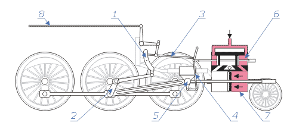
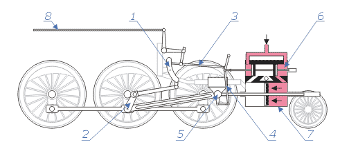

Fire Tube Boiler
Explanation of Fire Tube Boiler.
Fire Tube Boiler is the type of boiler in which the water is flowing outside (Surrounded) the tube and hot gases which are produced by the combustion chamber are inside the tube and the further boiler is used to rotate the turbine blade and that used for the generation of electricity.
Fire Tube Boiler Types:
- 1. Locomotive Boiler.
- 2. Cochran Boiler.
Locomotive Boiler:
Defination:
A locomotive boiler is a multi-tubular boiler and it has a horizontal drum axis. The circulation in the
locomotive boiler is natural, also it is a medium pressure boiler, the draft is artificial, forced
circulation, mobile, solid fuel fired fire tube boiler.
It is an external fire boiler and it has a large fire space. The locomotive boiler consists of a
horizontal shell and this shell consists of a number of fire tubes.
The fuel is burned here and the flue gases pass through the shell on the other side, there is a stake
locomotive boiler. It does not have a chimney and they have stacks on the other side and flue gases are
removed through the stake.
 

- 1. swing arm
- 2. counter crank (swing arm crank)
- 3. slider push rod
- 4. advance lever
- 5. crosshead
- 6. control cylinder with a slider
- 7. steam cylinder
- 8. control rod
Locomotive Boiler Working Principle:
The locomotive boiler consists of a cylindrical barrel with a rectangular box at one end and a smokebox at the other end. The coal is introduced through the fire hole in the great which is placed at the bottom of the firebox.
The hot gases which are generated due to the burning of the coal are deflected by an arch of fire bricks, so that the walls of the firebox may be heated properly.
The firebox is entirely surrounded by water except for the fire hole and the ash pit which is situated below the firebox which is fitted with dampers at its front and back ends.
The dampers control the flow of air to the great. Hot gases move from the firebox to the smokebox through a series of fire tubes and through the chimney they are discharged into the atmosphere.
The fire tubes are placed inside the barrel. Some of these tubes are of larger diameter and others of smaller diameter. Tubes of superheater are placed inside the fire tubes of larger diameter.
The heating value of the hot gases is transmitted into the water by heating the surface of the fire tubes. The steam generated is collected over the water surface. A dome-shaped chamber known as the steam dome is fitted on the upper part of the barrel, from where the stream flows through a steam pipe into the chamber.
It passes through the superheater tubes and returns to the superheated steam chamber from which it is led to the cylinder through the pipes, one to each cylinder.
The boiler itself is moving with a very high velocity from 60 kilometres per hour to 70 kilometres per hour.
So, there is always a movement of air over this stake and if you use Bernoulli’s theorem you can find a temperature drop and there is a substantial pressure drop between this grate.
The movement of the fluid pressure drop takes place so the chimney is not required in such boilers.
Advantages of Locomotive Boiler:
• High steam capacity.
• Low cost of construction.
• Portability is easy.
• Low installation cost.
• Compact in design
Disadvantages of Locomotive Boiler:
• Chances of corrosion and scale formation.
• Difficult to clean some parts.
• Need bracing for large parts.
• It cannot carry overloads that create overheating and damage.
Flues or Tubes:
A large part of the locomotive boiler is composed of flues or tubes. The flues give to the boiler the largest part of its heating surface. Tubes are made up of carbon molybdenum steel, 18-8 Cr Ni steel. It is the flues that largely affect the life of the boiler and that is why it is the life of the locomotive, for this reason, it is quite necessary to properly install and maintain themGrates:
The grate is made up of a set of parallel bars at the bottom of the fire-box, which hold the fuel. it is made of cast iron and constructed in sections of 3-4 bars each. They are supported at their ends by resting upon a frame and are connected by rods to a lever which can be moved back and forth to rack the bars and shake ashes and cinders out of the fire.Diaphragm:
The diaphragm or deflector plate is an iron plate placed obliquely over a portion of the front end of the flues which deflects the flue gases downward before entering the stack, thus equalizing to a great extent the draft in the different flues. This deflector plate may be adjusted to deflect the gases more or less as desired.Stack:
The stack is one of the most important features of the front end. Many different forms and proportions of stacks have been employed but at the present time, only two general types are found in use to any great extent, namely, the straight and tapered stacks.Draft Pipes:
The draft pipe is employed to increase the draft and may be used singly or in multiple and raised or lowered as desired.Smoke-Box and Front end Arrangement:
By the term front end is meant all that portion of the boiler beyond the front tube sheet and includes the cylindrical shell of the boiler and all the parts contained therein such as the steam or branch pipes, exhaust nozzle, netting, diaphragm, and draft.Safety Valves:
The universal practice at present is to use at least two safety valves of the pop type upon every locomotive boiler. On small locomotives where clearances will permit, the safety valves are placed in the dome cap. On large locomotives where the available height of the dome is limited, the safety valves are usually placed on a separate turret. When limiting heights will not permit the use of turrets, the safety valves may be screwed directly into the roof of the boiler.Brick Arches:
A brick arch is an arrangement placed in the fire-box to effect better combustion and to secure a more even distribution of the hot gases in their passage through the tubes. A longitudinal section of the fire-box is fitted with a brick arch and the method of action is very simple. It acts as a mixer of the products of combustion with the air and as a reflector of the radiant heat of the fire and the escaping gases. It is maintained at a very high temperature and in this condition meets the air and gases as they come in contact with it and turns them back to the narrow opening. This action, maintains a sufficiently high temperature to burn with the smallest possible quantity of air.Water level indicator:
The water level indicator is used to indicate the water level in the boiler and to maintain the water at a constant level because the production of steam majorly depends on the quantity of water. In case the water level is below the normal level then water will be pumped from the reservoir by the operator.Application of Locomotive Boiler:
The locomotive boiler is used at various places some of their applications are:
• Railways, Road rollers.
• Agricultural fields